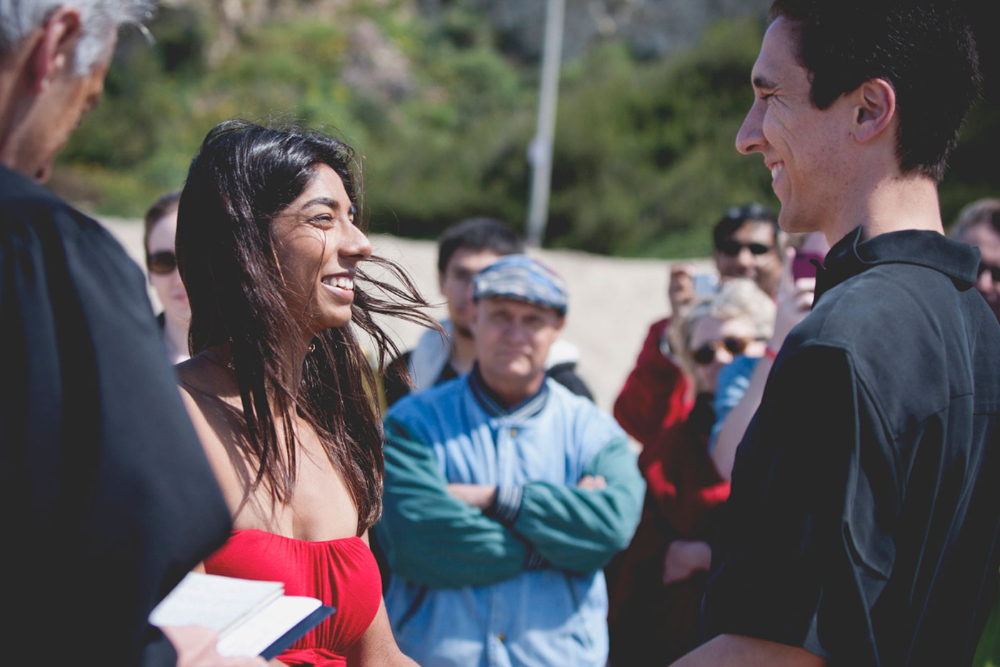

How many people meet classical musicians all the time? I do! Nic is a classical pianist and Juhi composes. And they got married. On top of all that, they are wonderful people and frequent this particular beach. I dig that.
Just like me, Juhi started off her wedding day with a giant cup of coffee. And coffee for everyone else. Drinks all around!
We headed to a very, very particular plot of sand on a very, very sunny day.
*Note that Juhi was still carrying her Starbucks coffee on her way to said plot of sand.



Hugs all around!


Cloud-gazing. The sand. The sea. This was seriously a perfect day for a wedding.


We ate while the seagulls hovered. One actually snuck away with a tater tot. Bad seagull.
Maybe it was the one that pooped on Juhi's dad.
It's cake-cutting time!


Nic and Juhi looked for whales while the others ate, swam, and sat in the sand on this not-too-hot, not-too-cold, amazingly perfect spring day.